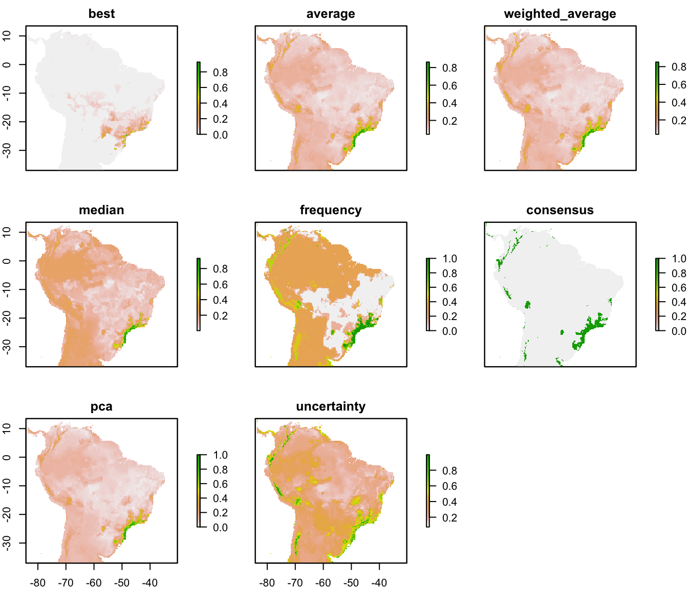

modleR: a workflow for ecological niche models based on dismo
Andrea Sánchez-Tapia, Sara Mortara & Diogo S. B. Rocha
2020-03-25
Source:vignettes/modleR.Rmd
modleR.Rmd
modleR is a workflow based on package dismo (Hijmans et al. 2017), designed to automatize some of the common steps when performing ecological niche models. Given the occurrence records and a set of environmental predictors, it prepares the data by cleaning for duplicates, removing occurrences with no environmental information and applying some geographic and environmental filters. It executes crossvalidation or bootstrap procedures, then it performs ecological niche models using several algorithms, some of which are already implemented in the dismo package, and others come from other packages in the R environment, such as glm, Support Vector Machines and Random Forests.
Installing
Currently modleR can be installed from GitHub:
# Without vignette remotes::install_github("Model-R/modleR", build = TRUE) # With vignette remotes::install_github("Model-R/modleR", build = TRUE, dependencies = TRUE, build_opts = c("--no-resave-data", "--no-manual"), build_vignettes = TRUE)
Note regarding vignette building: the default parameters in build_opts include --no-build-vignettes. In theory, removing this will include the vignette on the installation but we have found that build_vignettes = TRUE is also necessary. During installation, R may ask to install or update some packages. If any of these return an error you can install them apart by running install.packages() and retry. When building the vignette, package rJava and a JDK will be needed. Also, make sure that the maxent.jar file is available and in the java folder of package dismo. Please download it here. Vignette builindg may take a while during installation.
Shiny app
A shiny application currently available at: https://github.com/Model-R/modleR_shiny_app uses a previous version of this workflow and is currently being updated to this newest version.
The workflow
The workflow consists of mainly four functions that should be used sequentially.

- Setup:
setup_sdmdata()prepares and cleans the data, samples the pseudoabsences, and organizes the experimental design (bootstrap, crossvalidation or repeated crossvalidation). It creates a metadata file with details for the current round and a sdmdata file with the data used for modeling - Model fitting and projecting:
do_any()makes the ENM for one algorithm and partition; optionally,do_many()callsdo_any()to fit multiple algorithms - Partition joining:
final_model()joins the partition models into a model per species per algorithm - Ensemble:
ensemble_model()joins the different models per algorithm into an ensemble model (algorithmic consensus) using several methods.
Folder structure created by this package
modleR writes the outputs in the hard disk, according to the following folder structure:
models_dir
├── projection1
│ ├── data_setup
│ ├── ensemble_models
│ ├── final_models
│ └── partitions
└── projection2
├── data_setup
├── ensemble_models
├── final_models
└── partitions- We define a partition as the individual modeling round that takes part of the data to train the algorithms and the rest of the data to test them.
- We define the final models as joining together the partitions and obtaining one model per species per algorithm.
- Ensemble models join together the results obtained by different algorithms (Araújo and New 2007).
- When projecting models into the present, the projection folder is called
present. - You can set
models_dirwherever you want in the hard disk, but if you do not modify the default value, it will create the output under the working directory (its default value is./models, where the period points to the working directory) - The names of the
finalandensemblefolders can be modified, but the nested subfolder structure will remain the same. If you changefinal_modelsdefault value ("final_model") you will need to include the new value when callingensemble_model()(final_dir = "[new name]"), to indicate the function where to look for models. This partial flexibility allows for experimenting with final model and ensemble construction (by runnning final or ensemble twice in different output folders, for example).
Cleaning and setting up the data: setup_sdmdata()
The first step of the workflow is to setup the data, that is, to partition it according to each project needs, to sample background pseudoabsences and to apply some data cleaning procedures, as well as some filters. This is done by function setup_sdmdata()
modleR comes with example data, a list called example_occs, with occurrence data for four species, and predictor variables called example_vars
#> Loading modleRlibrary(modleR)
str(example_occs) #> List of 4 #> $ Abarema_langsdorffii:'data.frame': 104 obs. of 3 variables: #> ..$ sp : chr [1:104] "Abarema_langsdorffii" "Abarema_langsdorffii" "Abarema_langsdorffii" "Abarema_langsdorffii" ... #> ..$ lon: num [1:104] -40.6 -40.7 -41.2 -41.7 -42.5 ... #> ..$ lat: num [1:104] -19.9 -20 -20.3 -20.5 -20.7 ... #> $ Eugenia_florida :'data.frame': 341 obs. of 3 variables: #> ..$ sp : chr [1:341] "Eugenia_florida" "Eugenia_florida" "Eugenia_florida" "Eugenia_florida" ... #> ..$ lon: num [1:341] -35 -34.9 -34.9 -36.4 -42.1 ... #> ..$ lat: num [1:341] -6.38 -7.78 -8.1 -10.42 -2.72 ... #> $ Leandra_carassana :'data.frame': 82 obs. of 3 variables: #> ..$ sp : chr [1:82] "Leandra_carassana" "Leandra_carassana" "Leandra_carassana" "Leandra_carassana" ... #> ..$ lon: num [1:82] -39.3 -39.6 -40.7 -41.2 -41.5 ... #> ..$ lat: num [1:82] -15.2 -15.4 -20 -20.3 -20.4 ... #> $ Ouratea_semiserrata :'data.frame': 90 obs. of 3 variables: #> ..$ sp : chr [1:90] "Ouratea_semiserrata" "Ouratea_semiserrata" "Ouratea_semiserrata" "Ouratea_semiserrata" ... #> ..$ lon: num [1:90] -40 -42.5 -42.4 -42.9 -42.6 ... #> ..$ lat: num [1:90] -16.4 -20.7 -19.5 -19.6 -19.7 ... species <- names(example_occs) species #> [1] "Abarema_langsdorffii" "Eugenia_florida" "Leandra_carassana" #> [4] "Ouratea_semiserrata"
par(mfrow = c(2, 2), mar = c(2, 2, 3, 1)) for (i in 1:length(example_occs)) { plot(!is.na(example_vars[[1]]), legend = FALSE, main = species[i]) points(lat ~ lon, data = example_occs[[i]]) }

Figure 1. The example dataset: predictor variables and occurrence for four species.
We will filter the example_occs file to select only the data for the first species:
occs <- example_occs[[1]]
setupsdmdata() has a large number of parameters:
args(setup_sdmdata) #> function (species_name, occurrences, predictors, lon = "lon", #> lat = "lat", models_dir = "./models", real_absences = NULL, #> buffer_type = NULL, dist_buf = NULL, env_filter = FALSE, #> env_distance = "centroid", buffer_shape = NULL, min_env_dist = NULL, #> min_geog_dist = NULL, write_buffer = FALSE, seed = NULL, #> clean_dupl = FALSE, clean_nas = FALSE, clean_uni = FALSE, #> geo_filt = FALSE, geo_filt_dist = NULL, select_variables = FALSE, #> cutoff = 0.8, percent = 0.8, png_sdmdata = TRUE, n_back = 1000, #> partition_type = c("bootstrap"), boot_n = 1, boot_proportion = 0.7, #> cv_n = NULL, cv_partitions = NULL) #> NULL
-
species_nameis the name of the species to model -
occurrencesis the data frame with occurrences, lat and lon are the names of the columns for latitude and longitude, respectively. If they are already namedlatandlonthey need not be specified. -
predictors: is the rasterStack of the environmental variables
There are a couple options for data cleaning:
-
clean_duplwill delete exact duplicates in the occurrence data -
clean_naswill delete any occurrence with no environmental data in the predictor set.
The function also sets up different experimental designs:
-
partition_typecan be either bootstrap or k-fold crossvalidation -
boot_nandcv_nperform repeated bootstraps and repeated k-fold crossvalidation, respectively -
boot_proportionsets the proportion of data to be sampled as training set (defaults to 0.8) -
cv_partitionssets the number of partitions in the k-fold crossvalidations (defaults to 3) - but overwrites part when n < 10, setting part to the number of occurrence records (a jacknife partition).
Pseudoabsence sampling has also some options:
-
real_absencescan be used to specify a set of user-defined absences, with species name, lat and lon columns. -
geo_filtwill eliminate records that are at less thangeo_filt_distbetween them, in order to control for spatial autocorrelation -
buffer_type: can build a distance buffer around the occurrence points, by taking either the maximal, median or mean distance between points. Pseudoabsence points will be sampled (usingdismo::randomPoints()) within this buffer, in order to control for the area accessible to the species (M in the BAM diagram). -
seed: for reproducilibity purposes
test_folder <- "~/modleR_test" sdmdata_1sp <- setup_sdmdata(species_name = species[1], occurrences = occs, predictors = example_vars, models_dir = test_folder, partition_type = "crossvalidation", cv_partitions = 5, cv_n = 1, seed = 512, buffer_type = "mean", png_sdmdata = TRUE, n_back = 500, clean_dupl = FALSE, clean_uni = FALSE, clean_nas = FALSE, geo_filt = FALSE, geo_filt_dist = 10, select_variables = TRUE, percent = 0.5, cutoff = 0.7) #> metadata file found, checking metadata #> same metadata, no need to run data partition
- The function will return a
sdmdatadata frame, with the groups for training and test in bootstrap or crossvalidation, apavector that marks presences and absences, and the environmental dataset. This same data frame will be written in the hard disk, assdmdata.txt - It will also write a
metadata.txtwith the parameters of the latest modeling round. If there has been a cleaning step, it will show different values in the “original.n” and “final.n” columns. -
NOTE:
setup_sdmdatawill check if there’s a prior folder structure andsdmdata.txtandmetadata.txtfiles, in order to avoid repeating the data partitioning.- If a call to the function encounters previously written metadata, it will check if the current round has the same parameters and skip the data partitioning. A message will be displayed:
#> metadata file found, checking metadata#> same metadata, no need to run data partition - If a previous metadata file is found but it has different metadata (i.e. there is an inconsistency between the existing metadata and the current parameters), it will run the function with the current parameters.
- If a call to the function encounters previously written metadata, it will check if the current round has the same parameters and skip the data partitioning. A message will be displayed:
Fitting a model per partition: do_any() and do_many()
Functions do_any() and do_many() create a model per partition, per algorithm. The difference between these functions that do_any() performs modeling for one individual algorithm at a time, that can be chosen by using parameter algorithm, while do_many() can select multiple algorithms, with TRUE or FALSE statements (just as BIOMOD2 functions do).
The available algorithms are:
-
"bioclim","maxent","mahal","domain", as implemented in dismo package (Hijmans et al. 2017), - Support Vector Machines (SVM), as implemented by packages kernlab (
svmkKaratzoglou et al. 2004) and e1071 (svmeMeyer et al. 2017), - GLM from base R, here implemented with a stepwise selection approach
- Random Forests (from package randomForest Liaw and Wiener 2002)
- Boosted regression trees (BRT) as implemented by
gbm.step()function in dismo package (Hastie, Tibshirani, and Friedman 2001; Elith, Leathwick, and Hastie 2009).
Details for the implementation of each model can be accessed in the documentation of the function.
Here you can see the differences between the parameters of both functions. do_many() calls several instances of do_any() In practice you may only want to call do_many() but for parallelization by algorithm it may be better to call do_any() individually.
args(do_any) #> function (species_name, predictors, models_dir = "./models", #> algorithm = c("bioclim"), project_model = FALSE, proj_data_folder = "./data/proj", #> mask = NULL, write_rda = FALSE, png_partitions = FALSE, write_bin_cut = FALSE, #> dismo_threshold = "spec_sens", equalize = TRUE, sensitivity = 0.9, #> proc_threshold = 0.5, ...) #> NULL args(do_many) #> function (species_name, bioclim = FALSE, domain = FALSE, glm = FALSE, #> mahal = FALSE, maxent = FALSE, maxnet = FALSE, rf = FALSE, #> svmk = FALSE, svme = FALSE, brt = FALSE, ...) #> NULL
Calling do_many() and setting bioclim = TRUE is therefore equivalent to call do_any() and set algorithm = "bioclim".
sp_maxnet <- do_any(species_name = species[1], algorithm = "maxnet", predictors = example_vars, models_dir = test_folder, png_partitions = TRUE, write_bin_cut = FALSE, equalize = TRUE) #> maxnet #> Abarema_langsdorffii maxnet run number 1 part. nb. 3 #> fitting models #> projecting the models #> evaluating the models #> writing evaluation tables #> writing raster files #> writing png files #> Abarema_langsdorffii maxnet run number 1 part. nb. 4 #> fitting models #> projecting the models #> evaluating the models #> writing evaluation tables #> writing raster files #> writing png files #> Abarema_langsdorffii maxnet run number 1 part. nb. 2 #> fitting models #> projecting the models #> evaluating the models #> writing evaluation tables #> writing raster files #> writing png files #> Abarema_langsdorffii maxnet run number 1 part. nb. 5 #> fitting models #> projecting the models #> evaluating the models #> writing evaluation tables #> writing raster files #> writing png files #> Abarema_langsdorffii maxnet run number 1 part. nb. 1 #> fitting models #> projecting the models #> evaluating the models #> writing evaluation tables #> writing raster files #> writing png files sp_maxnet #> kappa spec_sens no_omission prevalence equal_sens_spec #> thresholds 0.3199126 0.1761995 0.00492225 0.1761995 0.109052 #> sensitivity species_name algorithm run partition presencenb #> thresholds 0.09111853 Abarema_langsdorffii maxnet 1 1 21 #> absencenb correlation pvaluecor AUC AUC_pval AUCratio #> thresholds 100 0.6977735 5.935626e-19 0.9142857 NA 1.828571 #> pROC pROC_pval TSSmax KAPPAmax dismo_threshold #> thresholds 1.787132 0 0.7295238 0.7357438 spec_sens #> prevalence.value PPP NPP TPR TNR FPR FNR #> thresholds 0.1735537 0.68 0.9583333 0.8095238 0.92 0.08 0.1904762 #> CCR Kappa F_score Jaccard #> thresholds 0.9008264 0.6784765 0.7391304 0.5862069
The following lines call for bioclim, GLM, maxnet, random forests and smvk (from package kernlab)
many <- do_many(species_name = species[1], predictors = example_vars, models_dir = test_folder, png_partitions = TRUE, write_bin_cut = FALSE, bioclim = TRUE, domain = FALSE, glm = TRUE, svmk = TRUE, svme = TRUE, maxnet = TRUE, rf = TRUE, mahal = FALSE, brt = TRUE, equalize = TRUE) #> bioclim #> Abarema_langsdorffii bioclim run number 1 part. nb. 3 #> fitting models #> projecting the models #> evaluating the models #> writing evaluation tables #> writing raster files #> writing png files #> Abarema_langsdorffii bioclim run number 1 part. nb. 4 #> fitting models #> projecting the models #> evaluating the models #> writing evaluation tables #> writing raster files #> writing png files #> Abarema_langsdorffii bioclim run number 1 part. nb. 2 #> fitting models #> projecting the models #> evaluating the models #> writing evaluation tables #> writing raster files #> writing png files #> Abarema_langsdorffii bioclim run number 1 part. nb. 5 #> fitting models #> projecting the models #> evaluating the models #> writing evaluation tables #> writing raster files #> writing png files #> Abarema_langsdorffii bioclim run number 1 part. nb. 1 #> fitting models #> projecting the models #> evaluating the models #> writing evaluation tables #> writing raster files #> writing png files #> glm #> Abarema_langsdorffii glm run number 1 part. nb. 3 #> fitting models #> projecting the models #> evaluating the models #> writing evaluation tables #> writing raster files #> writing png files #> Abarema_langsdorffii glm run number 1 part. nb. 4 #> fitting models #> projecting the models #> evaluating the models #> writing evaluation tables #> writing raster files #> writing png files #> Abarema_langsdorffii glm run number 1 part. nb. 2 #> fitting models #> projecting the models #> evaluating the models #> writing evaluation tables #> writing raster files #> writing png files #> Abarema_langsdorffii glm run number 1 part. nb. 5 #> fitting models #> projecting the models #> evaluating the models #> writing evaluation tables #> writing raster files #> writing png files #> Abarema_langsdorffii glm run number 1 part. nb. 1 #> fitting models #> projecting the models #> evaluating the models #> writing evaluation tables #> writing raster files #> writing png files #> maxnet #> Abarema_langsdorffii maxnet run number 1 part. nb. 3 #> fitting models #> projecting the models #> evaluating the models #> writing evaluation tables #> writing raster files #> writing png files #> Abarema_langsdorffii maxnet run number 1 part. nb. 4 #> fitting models #> projecting the models #> evaluating the models #> writing evaluation tables #> writing raster files #> writing png files #> Abarema_langsdorffii maxnet run number 1 part. nb. 2 #> fitting models #> projecting the models #> evaluating the models #> writing evaluation tables #> writing raster files #> writing png files #> Abarema_langsdorffii maxnet run number 1 part. nb. 5 #> fitting models #> projecting the models #> evaluating the models #> writing evaluation tables #> writing raster files #> writing png files #> Abarema_langsdorffii maxnet run number 1 part. nb. 1 #> fitting models #> projecting the models #> evaluating the models #> writing evaluation tables #> writing raster files #> writing png files #> rf #> Abarema_langsdorffii rf run number 1 part. nb. 3 #> fitting models #> Warning in randomForest.default(x, y, mtry = mtryStart, ntree = ntreeTry, : #> The response has five or fewer unique values. Are you sure you want to do #> regression? #> Warning in randomForest.default(x, y, mtry = mtryCur, ntree = ntreeTry, : #> The response has five or fewer unique values. Are you sure you want to do #> regression? #> 0.01281904 0.05 #> Warning in randomForest.default(x, y, mtry = mtryCur, ntree = ntreeTry, : #> The response has five or fewer unique values. Are you sure you want to do #> regression? #> -0.06103153 0.05 #> Warning in randomForest.default(x, y, mtry = res[which.min(res[, 2]), 1], : #> The response has five or fewer unique values. Are you sure you want to do #> regression? #> projecting the models #> evaluating the models #> writing evaluation tables #> writing raster files #> writing png files #> Abarema_langsdorffii rf run number 1 part. nb. 4 #> fitting models #> Warning in randomForest.default(x, y, mtry = mtryStart, ntree = ntreeTry, : #> The response has five or fewer unique values. Are you sure you want to do #> regression? #> Warning in randomForest.default(x, y, mtry = mtryStart, ntree = ntreeTry, : #> The response has five or fewer unique values. Are you sure you want to do #> regression? #> 0.008247689 0.05 #> Warning in randomForest.default(x, y, mtry = mtryCur, ntree = ntreeTry, : #> The response has five or fewer unique values. Are you sure you want to do #> regression? #> -0.0509031 0.05 #> Warning in randomForest.default(x, y, mtry = res[which.min(res[, 2]), 1], : #> The response has five or fewer unique values. Are you sure you want to do #> regression? #> projecting the models #> evaluating the models #> writing evaluation tables #> writing raster files #> writing png files #> Abarema_langsdorffii rf run number 1 part. nb. 2 #> fitting models #> Warning in randomForest.default(x, y, mtry = mtryStart, ntree = ntreeTry, : #> The response has five or fewer unique values. Are you sure you want to do #> regression? #> Warning in randomForest.default(x, y, mtry = mtryStart, ntree = ntreeTry, : #> The response has five or fewer unique values. Are you sure you want to do #> regression? #> 0.02903438 0.05 #> Warning in randomForest.default(x, y, mtry = mtryCur, ntree = ntreeTry, : #> The response has five or fewer unique values. Are you sure you want to do #> regression? #> -0.01391524 0.05 #> Warning in randomForest.default(x, y, mtry = res[which.min(res[, 2]), 1], : #> The response has five or fewer unique values. Are you sure you want to do #> regression? #> projecting the models #> evaluating the models #> writing evaluation tables #> writing raster files #> writing png files #> Abarema_langsdorffii rf run number 1 part. nb. 5 #> fitting models #> Warning in randomForest.default(x, y, mtry = mtryStart, ntree = ntreeTry, : #> The response has five or fewer unique values. Are you sure you want to do #> regression? #> Warning in randomForest.default(x, y, mtry = mtryStart, ntree = ntreeTry, : #> The response has five or fewer unique values. Are you sure you want to do #> regression? #> -0.06984245 0.05 #> Warning in randomForest.default(x, y, mtry = mtryCur, ntree = ntreeTry, : #> The response has five or fewer unique values. Are you sure you want to do #> regression? #> -0.05862316 0.05 #> Warning in randomForest.default(x, y, mtry = res[which.min(res[, 2]), 1], : #> The response has five or fewer unique values. Are you sure you want to do #> regression? #> projecting the models #> evaluating the models #> writing evaluation tables #> writing raster files #> writing png files #> Abarema_langsdorffii rf run number 1 part. nb. 1 #> fitting models #> Warning in randomForest.default(x, y, mtry = mtryStart, ntree = ntreeTry, : #> The response has five or fewer unique values. Are you sure you want to do #> regression? #> Warning in randomForest.default(x, y, mtry = mtryStart, ntree = ntreeTry, : #> The response has five or fewer unique values. Are you sure you want to do #> regression? #> 0.03103431 0.05 #> Warning in randomForest.default(x, y, mtry = mtryCur, ntree = ntreeTry, : #> The response has five or fewer unique values. Are you sure you want to do #> regression? #> 0.03651881 0.05 #> Warning in randomForest.default(x, y, mtry = res[which.min(res[, 2]), 1], : #> The response has five or fewer unique values. Are you sure you want to do #> regression? #> projecting the models #> evaluating the models #> writing evaluation tables #> writing raster files #> writing png files #> svmk #> Abarema_langsdorffii svmk run number 1 part. nb. 3 #> fitting models #> projecting the models #> evaluating the models #> writing evaluation tables #> writing raster files #> writing png files #> Abarema_langsdorffii svmk run number 1 part. nb. 4 #> fitting models #> projecting the models #> evaluating the models #> writing evaluation tables #> writing raster files #> writing png files #> Abarema_langsdorffii svmk run number 1 part. nb. 2 #> fitting models #> projecting the models #> evaluating the models #> writing evaluation tables #> writing raster files #> writing png files #> Abarema_langsdorffii svmk run number 1 part. nb. 5 #> fitting models #> projecting the models #> evaluating the models #> writing evaluation tables #> writing raster files #> writing png files #> Abarema_langsdorffii svmk run number 1 part. nb. 1 #> fitting models #> projecting the models #> evaluating the models #> writing evaluation tables #> writing raster files #> writing png files #> svme #> Abarema_langsdorffii svme run number 1 part. nb. 3 #> fitting models #> Trying svme 2 times #> projecting the models #> evaluating the models #> writing evaluation tables #> writing raster files #> writing png files #> Abarema_langsdorffii svme run number 1 part. nb. 4 #> fitting models #> projecting the models #> evaluating the models #> writing evaluation tables #> writing raster files #> writing png files #> Abarema_langsdorffii svme run number 1 part. nb. 2 #> fitting models #> projecting the models #> evaluating the models #> writing evaluation tables #> writing raster files #> writing png files #> Abarema_langsdorffii svme run number 1 part. nb. 5 #> fitting models #> projecting the models #> evaluating the models #> writing evaluation tables #> writing raster files #> writing png files #> Abarema_langsdorffii svme run number 1 part. nb. 1 #> fitting models #> projecting the models #> evaluating the models #> writing evaluation tables #> writing raster files #> writing png files #> brt #> Abarema_langsdorffii brt run number 1 part. nb. 3 #> fitting models #> #> #> GBM STEP - version 2.9 #> #> Performing cross-validation optimisation of a boosted regression tree model #> for NA and using a family of bernoulli #> Using 168 observations and 6 predictors #> creating 10 initial models of 50 trees #> #> folds are stratified by prevalence #> total mean deviance = 1.3863 #> tolerance is fixed at 0.0014 #> ntrees resid. dev. #> 50 1.1649 #> now adding trees... #> 100 1.0663 #> 150 1.0253 #> 200 1.0057 #> 250 0.9946 #> 300 0.9839 #> 350 0.9748 #> 400 0.9682 #> 450 0.9564 #> 500 0.948 #> 550 0.942 #> 600 0.9395 #> 650 0.9322 #> 700 0.927 #> 750 0.9201 #> 800 0.9176 #> 850 0.9161 #> 900 0.9154 #> 950 0.9118 #> 1000 0.9104 #> 1050 0.9109 #> 1100 0.9052 #> 1150 0.903 #> 1200 0.9022 #> 1250 0.8963 #> 1300 0.8964 #> 1350 0.895 #> 1400 0.8979 #> 1450 0.8942 #> 1500 0.8921 #> 1550 0.8905 #> 1600 0.8879 #> 1650 0.8875 #> 1700 0.8847 #> 1750 0.8848 #> 1800 0.8857 #> 1850 0.8855 #> 1900 0.8837 #> 1950 0.8841 #> 2000 0.8808 #> 2050 0.8805 #> 2100 0.8807 #> 2150 0.8828 #> 2200 0.883 #> 2250 0.8826 #> 2300 0.8815 #> 2350 0.8812 #> 2400 0.8814 #> 2450 0.8807 #> 2500 0.8821 #> 2550 0.8819 #> 2600 0.8824 #> 2650 0.882 #> 2700 0.8819 #> Warning: glm.fit: algorithm did not converge #> Warning: glm.fit: fitted probabilities numerically 0 or 1 occurred #> fitting final gbm model with a fixed number of 2050 trees for NA #> #> mean total deviance = 1.386 #> mean residual deviance = 0.461 #> #> estimated cv deviance = 0.881 ; se = 0.144 #> #> training data correlation = 0.873 #> cv correlation = 0.674 ; se = 0.062 #> #> training data AUC score = 0.978 #> cv AUC score = 0.877 ; se = 0.035 #> #> elapsed time - 0.06 minutes #> projecting the models #> evaluating the models #> writing evaluation tables #> writing raster files #> writing png files #> Abarema_langsdorffii brt run number 1 part. nb. 4 #> fitting models #> #> #> GBM STEP - version 2.9 #> #> Performing cross-validation optimisation of a boosted regression tree model #> for NA and using a family of bernoulli #> Using 166 observations and 6 predictors #> creating 10 initial models of 50 trees #> #> folds are stratified by prevalence #> total mean deviance = 1.3863 #> tolerance is fixed at 0.0014 #> ntrees resid. dev. #> 50 1.0791 #> now adding trees... #> 100 0.9489 #> 150 0.8855 #> 200 0.8511 #> 250 0.8322 #> 300 0.8256 #> 350 0.8242 #> 400 0.8209 #> 450 0.8207 #> 500 0.8208 #> 550 0.8233 #> 600 0.8257 #> 650 0.8267 #> 700 0.8286 #> 750 0.8298 #> 800 0.8313 #> 850 0.8321 #> 900 0.8333 #> 950 0.8341 #> 1000 0.8378 #> 1050 0.8413 #> 1100 0.8447 #> fitting final gbm model with a fixed number of 450 trees for NA #> #> mean total deviance = 1.386 #> mean residual deviance = 0.649 #> #> estimated cv deviance = 0.821 ; se = 0.098 #> #> training data correlation = 0.791 #> cv correlation = 0.722 ; se = 0.047 #> #> training data AUC score = 0.942 #> cv AUC score = 0.893 ; se = 0.028 #> #> elapsed time - 0.02 minutes #> projecting the models #> evaluating the models #> writing evaluation tables #> writing raster files #> writing png files #> Abarema_langsdorffii brt run number 1 part. nb. 2 #> fitting models #> #> #> GBM STEP - version 2.9 #> #> Performing cross-validation optimisation of a boosted regression tree model #> for NA and using a family of bernoulli #> Using 166 observations and 6 predictors #> creating 10 initial models of 50 trees #> #> folds are stratified by prevalence #> total mean deviance = 1.3863 #> tolerance is fixed at 0.0014 #> ntrees resid. dev. #> 50 1.1025 #> now adding trees... #> 100 1.0006 #> 150 0.9657 #> 200 0.9541 #> 250 0.9482 #> 300 0.9416 #> 350 0.9372 #> 400 0.9324 #> 450 0.9302 #> 500 0.93 #> 550 0.9331 #> 600 0.9329 #> 650 0.9334 #> 700 0.9324 #> 750 0.9334 #> 800 0.9314 #> 850 0.9327 #> 900 0.9336 #> 950 0.933 #> 1000 0.9351 #> 1050 0.9371 #> 1100 0.9379 #> 1150 0.9365 #> 1200 0.9388 #> Warning: glm.fit: algorithm did not converge #> Warning: glm.fit: fitted probabilities numerically 0 or 1 occurred #> fitting final gbm model with a fixed number of 500 trees for NA #> #> mean total deviance = 1.386 #> mean residual deviance = 0.739 #> #> estimated cv deviance = 0.93 ; se = 0.095 #> #> training data correlation = 0.751 #> cv correlation = 0.669 ; se = 0.057 #> #> training data AUC score = 0.927 #> cv AUC score = 0.863 ; se = 0.033 #> #> elapsed time - 0.02 minutes #> projecting the models #> evaluating the models #> writing evaluation tables #> writing raster files #> writing png files #> Abarema_langsdorffii brt run number 1 part. nb. 5 #> fitting models #> #> #> GBM STEP - version 2.9 #> #> Performing cross-validation optimisation of a boosted regression tree model #> for NA and using a family of bernoulli #> Using 166 observations and 6 predictors #> creating 10 initial models of 50 trees #> #> folds are stratified by prevalence #> total mean deviance = 1.3863 #> tolerance is fixed at 0.0014 #> ntrees resid. dev. #> 50 1.0986 #> now adding trees... #> 100 0.9649 #> 150 0.9047 #> 200 0.8641 #> 250 0.8345 #> 300 0.8109 #> 350 0.7919 #> 400 0.7791 #> 450 0.7639 #> 500 0.7544 #> 550 0.748 #> 600 0.744 #> 650 0.7415 #> 700 0.7397 #> 750 0.7364 #> 800 0.7363 #> 850 0.7371 #> 900 0.7372 #> 950 0.7373 #> 1000 0.7393 #> 1050 0.7431 #> 1100 0.7435 #> 1150 0.7478 #> 1200 0.7495 #> 1250 0.7551 #> 1300 0.7594 #> 1350 0.7632 #> Warning: glm.fit: algorithm did not converge #> Warning: glm.fit: fitted probabilities numerically 0 or 1 occurred #> Warning: glm.fit: fitted probabilities numerically 0 or 1 occurred #> Warning: glm.fit: algorithm did not converge #> Warning: glm.fit: fitted probabilities numerically 0 or 1 occurred #> fitting final gbm model with a fixed number of 800 trees for NA #> #> mean total deviance = 1.386 #> mean residual deviance = 0.499 #> #> estimated cv deviance = 0.736 ; se = 0.089 #> #> training data correlation = 0.866 #> cv correlation = 0.777 ; se = 0.039 #> #> training data AUC score = 0.965 #> cv AUC score = 0.921 ; se = 0.022 #> #> elapsed time - 0.03 minutes #> projecting the models #> evaluating the models #> writing evaluation tables #> writing raster files #> writing png files #> Abarema_langsdorffii brt run number 1 part. nb. 1 #> fitting models #> #> #> GBM STEP - version 2.9 #> #> Performing cross-validation optimisation of a boosted regression tree model #> for NA and using a family of bernoulli #> Using 166 observations and 6 predictors #> creating 10 initial models of 50 trees #> #> folds are stratified by prevalence #> total mean deviance = 1.3863 #> tolerance is fixed at 0.0014 #> ntrees resid. dev. #> 50 1.0811 #> now adding trees... #> 100 0.9443 #> 150 0.8889 #> 200 0.8646 #> 250 0.8423 #> 300 0.8272 #> 350 0.8145 #> 400 0.8051 #> 450 0.8009 #> 500 0.7992 #> 550 0.7985 #> 600 0.7965 #> 650 0.7933 #> 700 0.7952 #> 750 0.7934 #> 800 0.7935 #> 850 0.791 #> 900 0.7907 #> 950 0.7933 #> 1000 0.7937 #> 1050 0.7941 #> 1100 0.7931 #> 1150 0.7969 #> 1200 0.7981 #> 1250 0.7994 #> 1300 0.8034 #> 1350 0.8053 #> Warning: glm.fit: algorithm did not converge #> Warning: glm.fit: fitted probabilities numerically 0 or 1 occurred #> Warning: glm.fit: algorithm did not converge #> Warning: glm.fit: fitted probabilities numerically 0 or 1 occurred #> fitting final gbm model with a fixed number of 900 trees for NA #> #> mean total deviance = 1.386 #> mean residual deviance = 0.563 #> #> estimated cv deviance = 0.791 ; se = 0.118 #> #> training data correlation = 0.832 #> cv correlation = 0.743 ; se = 0.055 #> #> training data AUC score = 0.956 #> cv AUC score = 0.889 ; se = 0.036 #> #> elapsed time - 0.02 minutes #> projecting the models #> evaluating the models #> writing evaluation tables #> writing raster files #> writing png files
In addition:
-
mask: will crop and mask the partition models into a ShapeFile -
png_partitionswill create a png file of the output
You can explore the list of files created at this phase, for example:
partitions.folder <- list.files(test_folder, recursive = TRUE, pattern = "partitions", include.dirs = TRUE, full.names = TRUE) partitions.folder #> [1] "/Users/andreasancheztapia/modleR_test/Abarema_langsdorffii/present/partitions"
A call to:
list.files(partitions.folder, recursive = TRUE)should return something like this:
[1] "bioclim_bin_Abarema_langsdorffii_1_1.png"
[2] "bioclim_bin_Abarema_langsdorffii_1_1.tif"
[3] "bioclim_bin_Abarema_langsdorffii_1_2.png"
[4] "bioclim_bin_Abarema_langsdorffii_1_2.tif"
...
[11] "bioclim_cont_Abarema_langsdorffii_1_1.png"
[12] "bioclim_cont_Abarema_langsdorffii_1_1.tif"
[13] "bioclim_cont_Abarema_langsdorffii_1_2.png"
[14] "bioclim_cont_Abarema_langsdorffii_1_2.tif"
...
[31] "evaluate_Abarema_langsdorffii_1_1_bioclim.txt"
[32] "evaluate_Abarema_langsdorffii_1_1_glm.txt"
[33] "evaluate_Abarema_langsdorffii_1_1_maxnet.txt"
...
[116] "metadata.txt"
...
[145] "rf_cut_Abarema_langsdorffii_1_5.png"
[146] "rf_cut_Abarema_langsdorffii_1_5.tif"
[147] "sdmdata_Abarema_langsdorffii.png"
[148] "sdmdata.txt"At the end of a modeling round, the partition folder containts:
- A
.tiffile for each partition, continuous, binary and cut by the threshold that maximizes its TSS (TSSmax). Its name will indicate the algorithm, the type of model (cont, bin or cut), the name of the species, the run and partition. - Figures in
.pngto explore the results readily, without reloading them into R or opening them in a SIG program. The creation of these figures can be controlled with thepng_partitionsparameter. - A
.txttable with the evaluation data for each partition:evaluate_[Species name ]_[partition number]_[algorithm].txt. These files will be read by thefinal_model()function, to generate the final model per species. - A file called
sdmdata.txtwith the data used for each partition - A file called
metadata.txtwith the metadata of the current modeling round. - An optional
.pngimage of the data (controlled by parameterpng_sdmdata = TRUE)
Joining partitions: final_model()
There are many ways to create a final model per algorithm per species. final_model() follows the following logic:

- The partitions can be the raw, uncut models, the binary or the cut (zero below the threshold and continuous above it) and form a
raster::rasterStack()object. - Their means can be calculated (
raw_mean,bin_mean) - From
raw_mean, a binary model can be obtained by cutting it by the mean threshold that maximizes the selected performance metric for each partition (bin_mean_th). A “cut” model can also be obtained (cut_mean_th). - From
bin_mean, a consensus model (i.e. how many of the models predict an area) can be built (bin_consensus). The parameterconsensus_levelallows to set this level of consensus (defaults to 0.5: majority consensus approach). - NOTE: The final models can be done using a subset of the algorithms avaliable on the hard disk, using the parameter
algorithms. If left unspecified, all algorithms listed in theevaluatefiles will be used.
args(final_model) #> function (species_name, algorithms = NULL, scale_models = TRUE, #> consensus_level = 0.5, models_dir = "./models", final_dir = "final_models", #> proj_dir = "present", which_models = c("raw_mean"), mean_th_par = c("spec_sens"), #> uncertainty = FALSE, png_final = TRUE, sensitivity = 0.9, #> ...) #> NULL
final_model(species_name = species[1], algorithms = NULL, #if null it will take all the in-disk algorithms models_dir = test_folder, which_models = c("raw_mean", "bin_mean", "bin_consensus"), consensus_level = 0.5, uncertainty = TRUE, overwrite = TRUE) #> [1] "Wed Mar 25 15:38:37 2020" #> Abarema_langsdorffii #> Reading evaluation files for Abarema_langsdorffii in present #> Extracting data for Abarema_langsdorffii bioclim #> Reading models from .tif files #> 5 / 5 partitions will be used for Abarema_langsdorffii bioclim #> Standardizing models from 0 to 1 #> selected final models for Abarema_langsdorffii bioclim DONE #> Writing models bioclim #> Extracting data for Abarema_langsdorffii brt #> Reading models from .tif files #> 5 / 5 partitions will be used for Abarema_langsdorffii brt #> Standardizing models from 0 to 1 #> selected final models for Abarema_langsdorffii brt DONE #> Writing models brt #> Extracting data for Abarema_langsdorffii glm #> Reading models from .tif files #> 5 / 5 partitions will be used for Abarema_langsdorffii glm #> Standardizing models from 0 to 1 #> selected final models for Abarema_langsdorffii glm DONE #> Writing models glm #> Extracting data for Abarema_langsdorffii maxnet #> Reading models from .tif files #> 5 / 5 partitions will be used for Abarema_langsdorffii maxnet #> Standardizing models from 0 to 1 #> selected final models for Abarema_langsdorffii maxnet DONE #> Writing models maxnet #> Extracting data for Abarema_langsdorffii rf #> Reading models from .tif files #> 5 / 5 partitions will be used for Abarema_langsdorffii rf #> Standardizing models from 0 to 1 #> selected final models for Abarema_langsdorffii rf DONE #> Writing models rf #> Extracting data for Abarema_langsdorffii svme #> Reading models from .tif files #> 5 / 5 partitions will be used for Abarema_langsdorffii svme #> Standardizing models from 0 to 1 #> selected final models for Abarema_langsdorffii svme DONE #> Writing models svme #> Extracting data for Abarema_langsdorffii svmk #> Reading models from .tif files #> 5 / 5 partitions will be used for Abarema_langsdorffii svmk #> Standardizing models from 0 to 1 #> selected final models for Abarema_langsdorffii svmk DONE #> Writing models svmk #> writing metadata #> [1] "DONE svmk !" #> kappa spec_sens no_omission prevalence equal_sens_spec sensitivity #> 1 0.07218916 0.04809277 -0.00010000 0.16857470 0.04809277 0.04809277 #> 2 0.82662948 0.39069024 -1.92989875 0.09180761 0.39069024 0.43415606 #> 3 0.33109077 0.33109077 0.02844708 0.15480553 0.19622520 0.19473965 #> 4 0.31991255 0.17619949 0.00492225 0.17619949 0.10905196 0.09111853 #> 5 0.65820000 0.65820000 0.06426667 0.17180000 0.46896667 0.69473333 #> 6 0.19253552 0.19253552 -0.00618287 0.19253552 0.07015249 0.20658250 #> 7 0.14758247 0.10761077 -0.01248507 0.15831118 0.07707533 0.11308524 #> 8 0.25291205 0.12038193 -0.00010000 0.16857470 0.07218916 0.02399639 #> 9 0.91361640 0.02055549 0.02055549 0.25550454 0.83480060 0.83480060 #> 10 0.24849759 0.24849759 0.14242208 0.18108208 0.31299245 0.31299245 #> 11 0.64136783 0.27127092 0.27127092 0.18618639 0.44670794 0.47217070 #> 12 0.77520000 0.75696667 0.66180000 0.17130000 0.75696667 0.77606667 #> 13 0.40594724 0.16501184 0.16501184 0.17877434 0.29732647 0.37519042 #> 14 0.42031253 0.15169553 0.15169553 0.15785722 0.28025826 0.42751069 #> 15 0.19037619 0.04751905 -0.00010000 0.16656667 0.07132857 0.02370952 #> 16 0.83122166 0.83122166 -1.73175320 0.28351135 0.69392529 -0.22983530 #> 17 0.42164642 0.19935320 0.00970504 0.17247034 0.25583286 0.04901348 #> 18 0.33665583 0.17540725 0.00408978 0.16755334 0.19003715 0.09942462 #> 19 0.69130000 0.44923333 0.17206667 0.16476667 0.44923333 0.20873333 #> 20 0.16501184 0.16501184 -0.02412937 0.16501184 0.16501184 0.00989128 #> 21 0.19370531 0.19370531 -0.02629314 0.15784527 0.19370531 0.01403567 #> 22 0.22881566 0.09628554 -0.00010000 0.16857470 0.09628554 0.09628554 #> 23 0.98191331 0.98191331 -0.26696180 0.32044152 0.49916672 0.49916672 #> 24 0.48371928 0.19145236 0.07142959 0.17292862 0.22669136 0.20559806 #> 25 0.28408239 0.28408239 0.07019214 0.17527792 0.25022335 0.20151193 #> 26 0.70160000 0.62290000 0.47943333 0.17513333 0.64626667 0.66516667 #> 27 0.33556956 0.15598053 -0.00493722 0.17231664 0.16859401 0.21527493 #> 28 0.39702119 0.15920573 -0.00882606 0.18642237 0.20156938 0.20156938 #> 29 0.12038193 0.04809277 -0.00010000 0.16857470 0.02399639 0.02399639 #> 30 1.37549523 0.08034040 -3.14906733 0.15778172 -1.64815091 -2.40731623 #> 31 0.63740501 0.17525009 0.00682914 0.17525009 0.05979101 0.02006101 #> 32 0.44814759 0.01072223 0.00095274 0.15662056 0.04072912 0.01500022 #> 33 0.37803333 0.37803333 0.00930000 0.17363333 0.21320000 0.05980000 #> 34 0.26258569 0.05565798 -0.00499454 0.19781681 0.03764554 0.00104084 #> 35 0.58880539 0.08583980 -0.01600202 0.17352216 0.03316320 0.00065161 #> species_name algorithm run partition presencenb absencenb #> 1 Abarema_langsdorffii bioclim 1 1 21 100 #> 2 Abarema_langsdorffii brt 1 1 21 100 #> 3 Abarema_langsdorffii glm 1 1 21 100 #> 4 Abarema_langsdorffii maxnet 1 1 21 100 #> 5 Abarema_langsdorffii rf 1 1 21 100 #> 6 Abarema_langsdorffii svme 1 1 21 100 #> 7 Abarema_langsdorffii svmk 1 1 21 100 #> 8 Abarema_langsdorffii bioclim 1 2 21 100 #> 9 Abarema_langsdorffii brt 1 2 21 100 #> 10 Abarema_langsdorffii glm 1 2 21 100 #> 11 Abarema_langsdorffii maxnet 1 2 21 100 #> 12 Abarema_langsdorffii rf 1 2 21 100 #> 13 Abarema_langsdorffii svme 1 2 21 100 #> 14 Abarema_langsdorffii svmk 1 2 21 100 #> 15 Abarema_langsdorffii bioclim 1 3 20 100 #> 16 Abarema_langsdorffii brt 1 3 20 100 #> 17 Abarema_langsdorffii glm 1 3 20 100 #> 18 Abarema_langsdorffii maxnet 1 3 20 100 #> 19 Abarema_langsdorffii rf 1 3 20 100 #> 20 Abarema_langsdorffii svme 1 3 20 100 #> 21 Abarema_langsdorffii svmk 1 3 20 100 #> 22 Abarema_langsdorffii bioclim 1 4 21 100 #> 23 Abarema_langsdorffii brt 1 4 21 100 #> 24 Abarema_langsdorffii glm 1 4 21 100 #> 25 Abarema_langsdorffii maxnet 1 4 21 100 #> 26 Abarema_langsdorffii rf 1 4 21 100 #> 27 Abarema_langsdorffii svme 1 4 21 100 #> 28 Abarema_langsdorffii svmk 1 4 21 100 #> 29 Abarema_langsdorffii bioclim 1 5 21 100 #> 30 Abarema_langsdorffii brt 1 5 21 100 #> 31 Abarema_langsdorffii glm 1 5 21 100 #> 32 Abarema_langsdorffii maxnet 1 5 21 100 #> 33 Abarema_langsdorffii rf 1 5 21 100 #> 34 Abarema_langsdorffii svme 1 5 21 100 #> 35 Abarema_langsdorffii svmk 1 5 21 100 #> correlation pvaluecor AUC AUC_pval AUCratio pROC pROC_pval #> 1 0.4480167 2.566218e-07 0.8190476 NA 1.638095 1.830157 0 #> 2 0.6454647 1.325567e-15 0.9257143 NA 1.851429 1.700328 0 #> 3 0.6903083 1.970747e-18 0.9295238 NA 1.859048 1.716567 0 #> 4 0.6977735 5.935626e-19 0.9142857 NA 1.828571 1.796240 0 #> 5 0.7221420 9.014913e-21 0.9314286 NA 1.862857 1.559832 0 #> 6 0.7223519 8.678787e-21 0.9366667 NA 1.873333 1.353161 0 #> 7 0.6750438 2.055271e-17 0.9152381 NA 1.830476 1.199724 0 #> 8 0.3545906 6.594145e-05 0.7297619 NA 1.459524 1.774365 0 #> 9 0.6410768 2.366488e-15 0.9338095 NA 1.867619 1.911910 0 #> 10 0.6691222 4.916937e-17 0.9390476 NA 1.878095 1.852064 0 #> 11 0.7038821 2.162570e-19 0.9395238 NA 1.879048 1.961316 0 #> 12 0.7166133 2.422252e-20 0.9747619 NA 1.949524 1.977932 0 #> 13 0.7817323 3.655430e-26 0.9685714 NA 1.937143 1.718128 0 #> 14 0.7204569 1.221485e-20 0.9485714 NA 1.897143 1.701591 0 #> 15 0.4361926 6.359398e-07 0.7717500 NA 1.543500 1.801613 0 #> 16 0.5767427 5.428280e-12 0.9150000 NA 1.830000 1.859491 0 #> 17 0.5275248 5.992005e-10 0.8625000 NA 1.725000 1.617664 0 #> 18 0.6251312 2.317029e-14 0.9015000 NA 1.803000 1.807113 0 #> 19 0.6137492 9.097276e-14 0.8995000 NA 1.799000 1.548020 0 #> 20 0.6081352 1.750584e-13 0.8810000 NA 1.762000 1.289394 0 #> 21 0.6112069 1.225577e-13 0.8800000 NA 1.760000 1.356159 0 #> 22 0.6809576 8.427162e-18 0.9057143 NA 1.811429 1.897174 0 #> 23 0.6451649 1.379512e-15 0.9447619 NA 1.889524 1.905274 0 #> 24 0.6070905 1.562636e-13 0.9038095 NA 1.807619 1.748525 0 #> 25 0.6752218 2.001449e-17 0.9347619 NA 1.869524 1.860996 0 #> 26 0.7349008 8.388010e-22 0.9723810 NA 1.944762 1.948984 0 #> 27 0.7446564 1.242036e-22 0.9371429 NA 1.874286 1.392318 0 #> 28 0.7173178 2.138420e-20 0.9257143 NA 1.851429 1.436506 0 #> 29 0.4427049 3.686475e-07 0.7273810 NA 1.454762 1.861021 0 #> 30 0.6048480 2.024789e-13 0.8652381 NA 1.730476 1.459380 0 #> 31 0.5956863 5.715602e-13 0.8080952 NA 1.616190 1.318088 0 #> 32 0.5965813 5.172041e-13 0.8552381 NA 1.710476 1.697563 0 #> 33 0.6143013 6.698632e-14 0.8409524 NA 1.681905 1.128380 0 #> 34 0.6791731 1.105263e-17 0.8319048 NA 1.663810 1.048133 0 #> 35 0.6427902 1.889298e-15 0.7914286 NA 1.582857 1.038614 0 #> TSSmax KAPPAmax dismo_threshold prevalence.value PPP NPP #> 1 0.5771429 0.4180361 spec_sens 0.1735537 0.3913043 0.9600000 #> 2 0.7947619 0.7119048 spec_sens 0.1735537 0.6333333 0.9780220 #> 3 0.7971429 0.7545639 spec_sens 0.1735537 0.7500000 0.9690722 #> 4 0.7295238 0.7357438 spec_sens 0.1735537 0.6800000 0.9583333 #> 5 0.8347619 0.7630033 spec_sens 0.1735537 0.7307692 0.9789474 #> 6 0.8647619 0.8334098 spec_sens 0.1735537 0.8260870 0.9795918 #> 7 0.8347619 0.7778798 spec_sens 0.1735537 0.7307692 0.9789474 #> 8 0.3714286 0.3517176 spec_sens 0.1735537 0.3750000 0.8988764 #> 9 0.8100000 0.6494205 spec_sens 0.1735537 0.5250000 1.0000000 #> 10 0.8323810 0.6896824 spec_sens 0.1735537 0.6250000 0.9887640 #> 11 0.8100000 0.7000225 spec_sens 0.1735537 0.5250000 1.0000000 #> 12 0.8823810 0.8091053 spec_sens 0.1735537 0.7407407 0.9893617 #> 13 0.8800000 0.7545639 spec_sens 0.1735537 0.6363636 1.0000000 #> 14 0.8700000 0.7411211 spec_sens 0.1735537 0.6176471 1.0000000 #> 15 0.4500000 0.4375000 spec_sens 0.1666667 0.3137255 0.9420290 #> 16 0.8100000 0.7105263 spec_sens 0.1666667 0.6666667 0.9784946 #> 17 0.6800000 0.5344828 spec_sens 0.1666667 0.4500000 0.9750000 #> 18 0.7700000 0.6379310 spec_sens 0.1666667 0.5806452 0.9775281 #> 19 0.6900000 0.6250000 spec_sens 0.1666667 0.5151515 0.9655172 #> 20 0.7900000 0.6694915 spec_sens 0.1666667 0.6206897 0.9780220 #> 21 0.8000000 0.6896552 spec_sens 0.1666667 0.6428571 0.9782609 #> 22 0.6471429 0.6501971 spec_sens 0.1735537 0.4615385 0.9634146 #> 23 0.7771429 0.7103373 spec_sens 0.1735537 0.6923077 0.9684211 #> 24 0.6847619 0.6501971 spec_sens 0.1735537 0.4634146 0.9750000 #> 25 0.7471429 0.6494205 spec_sens 0.1735537 0.6206897 0.9673913 #> 26 0.8623810 0.8271429 spec_sens 0.1735537 0.6896552 0.9891304 #> 27 0.8523810 0.7944674 spec_sens 0.1735537 0.6666667 0.9890110 #> 28 0.8223810 0.7605146 spec_sens 0.1735537 0.6060606 0.9886364 #> 29 0.3614286 0.4046740 spec_sens 0.1735537 0.3636364 0.8977273 #> 30 0.6242857 0.6350425 spec_sens 0.1735537 0.6250000 0.9381443 #> 31 0.5566667 0.6350425 spec_sens 0.1735537 0.5600000 0.9270833 #> 32 0.5623810 0.5865966 spec_sens 0.1735537 0.3389831 0.9838710 #> 33 0.7019048 0.6889460 spec_sens 0.1735537 0.7272727 0.9494949 #> 34 0.6242857 0.6752550 spec_sens 0.1735537 0.6250000 0.9381443 #> 35 0.5766667 0.6608744 spec_sens 0.1735537 0.6086957 0.9285714 #> TPR TNR FPR FNR CCR Kappa F_score Jaccard #> 1 0.8571429 0.72 0.28 0.14285714 0.7438017 0.3925506 0.5373134 0.3673469 #> 2 0.9047619 0.89 0.11 0.09523810 0.8925620 0.6796986 0.7450980 0.5937500 #> 3 0.8571429 0.94 0.06 0.14285714 0.9256198 0.7545639 0.8000000 0.6666667 #> 4 0.8095238 0.92 0.08 0.19047619 0.9008264 0.6784765 0.7391304 0.5862069 #> 5 0.9047619 0.93 0.07 0.09523810 0.9256198 0.7630033 0.8085106 0.6785714 #> 6 0.9047619 0.96 0.04 0.09523810 0.9504132 0.8334098 0.8636364 0.7600000 #> 7 0.9047619 0.93 0.07 0.09523810 0.9256198 0.7630033 0.8085106 0.6785714 #> 8 0.5714286 0.80 0.20 0.42857143 0.7603306 0.3077530 0.4528302 0.2926829 #> 9 1.0000000 0.81 0.19 0.00000000 0.8429752 0.5967374 0.6885246 0.5250000 #> 10 0.9523810 0.88 0.12 0.04761905 0.8925620 0.6896824 0.7547170 0.6060606 #> 11 1.0000000 0.81 0.19 0.00000000 0.8429752 0.5967374 0.6885246 0.5250000 #> 12 0.9523810 0.93 0.07 0.04761905 0.9338843 0.7928969 0.8333333 0.7142857 #> 13 1.0000000 0.88 0.12 0.00000000 0.9008264 0.7179487 0.7777778 0.6363636 #> 14 1.0000000 0.87 0.13 0.00000000 0.8925620 0.6990626 0.7636364 0.6176471 #> 15 0.8000000 0.65 0.35 0.20000000 0.6750000 0.2777778 0.4507042 0.2909091 #> 16 0.9000000 0.91 0.09 0.10000000 0.9083333 0.7105263 0.7659574 0.6206897 #> 17 0.9000000 0.78 0.22 0.10000000 0.8000000 0.4857143 0.6000000 0.4285714 #> 18 0.9000000 0.87 0.13 0.10000000 0.8750000 0.6311475 0.7058824 0.5454545 #> 19 0.8500000 0.84 0.16 0.15000000 0.8416667 0.5476190 0.6415094 0.4722222 #> 20 0.9000000 0.89 0.11 0.10000000 0.8916667 0.6694915 0.7346939 0.5806452 #> 21 0.9000000 0.90 0.10 0.10000000 0.9000000 0.6896552 0.7500000 0.6000000 #> 22 0.8571429 0.79 0.21 0.14285714 0.8016529 0.4834578 0.6000000 0.4285714 #> 23 0.8571429 0.92 0.08 0.14285714 0.9090909 0.7103373 0.7659574 0.6206897 #> 24 0.9047619 0.78 0.22 0.09523810 0.8016529 0.4975779 0.6129032 0.4418605 #> 25 0.8571429 0.89 0.11 0.14285714 0.8842975 0.6494205 0.7200000 0.5625000 #> 26 0.9523810 0.91 0.09 0.04761905 0.9173554 0.7495861 0.8000000 0.6666667 #> 27 0.9523810 0.90 0.10 0.04761905 0.9090909 0.7289758 0.7843137 0.6451613 #> 28 0.9523810 0.87 0.13 0.04761905 0.8842975 0.6709402 0.7407407 0.5882353 #> 29 0.5714286 0.79 0.21 0.42857143 0.7520661 0.2948718 0.4444444 0.2857143 #> 30 0.7142857 0.91 0.09 0.28571429 0.8760331 0.5909398 0.6666667 0.5000000 #> 31 0.6666667 0.89 0.11 0.33333333 0.8512397 0.5177148 0.6086957 0.4375000 #> 32 0.9523810 0.61 0.39 0.04761905 0.6694215 0.3279645 0.5000000 0.3333333 #> 33 0.7619048 0.94 0.06 0.23809524 0.9090909 0.6889460 0.7441860 0.5925926 #> 34 0.7142857 0.91 0.09 0.28571429 0.8760331 0.5909398 0.6666667 0.5000000 #> 35 0.6666667 0.91 0.09 0.33333333 0.8677686 0.5557595 0.6363636 0.4666667
final_model() creates a .tif file for each final.model (one per algorithm) under the specified folder (default: final_models)
We can explore these models from the files:
final.folder <- list.files(test_folder, recursive = TRUE, pattern = "final_models", include.dirs = TRUE, full.names = TRUE) final.folder #> [1] "/Users/andreasancheztapia/modleR_test/Abarema_langsdorffii/present/final_models" final_mods <- list.files(final.folder, full.names = TRUE, pattern = "raw_mean.+tif$", recursive = TRUE) final_mods #> [1] "/Users/andreasancheztapia/modleR_test/Abarema_langsdorffii/present/final_models/Abarema_langsdorffii_bioclim_raw_mean.tif" #> [2] "/Users/andreasancheztapia/modleR_test/Abarema_langsdorffii/present/final_models/Abarema_langsdorffii_brt_raw_mean.tif" #> [3] "/Users/andreasancheztapia/modleR_test/Abarema_langsdorffii/present/final_models/Abarema_langsdorffii_glm_raw_mean.tif" #> [4] "/Users/andreasancheztapia/modleR_test/Abarema_langsdorffii/present/final_models/Abarema_langsdorffii_maxnet_raw_mean.tif" #> [5] "/Users/andreasancheztapia/modleR_test/Abarema_langsdorffii/present/final_models/Abarema_langsdorffii_rf_raw_mean.tif" #> [6] "/Users/andreasancheztapia/modleR_test/Abarema_langsdorffii/present/final_models/Abarema_langsdorffii_svme_raw_mean.tif" #> [7] "/Users/andreasancheztapia/modleR_test/Abarema_langsdorffii/present/final_models/Abarema_langsdorffii_svmk_raw_mean.tif"
final_models <- stack(final_mods) names(final_models) <- sapply(strsplit(names(final_models), paste0(species[1], '_')), function(x) x[2]) plot(final_models)

Algorithmic consensus with ensemble_model()
The fourth step of the workflow is joining the models for each algorithm into a final ensemble model. ensemble_model() calculates the mean, standard deviation, minimum and maximum values of the final models and saves them under the folder specified by ensemble_dir. It can also create these models by a consensus rule (what proportion of final models predict a presence in each pixel, 0.5 is a majority rule, 0.3 would be 30% of the models).
ensemble_model() uses a which_final parameter -analog to which_model in final_model() to specify which final model(s) (Figure 2) should be assembled together (the default is a mean of the raw continuous models: which_final = c("raw_mean")).
args(ensemble_model) #> function (species_name, occurrences, lon = "lon", lat = "lat", #> models_dir = "./models", final_dir = "final_models", ensemble_dir = "ensemble", #> proj_dir = "present", algorithms = NULL, which_ensemble = c("average"), #> which_final = c("raw_mean"), performance_metric = "TSSmax", #> dismo_threshold = "spec_sens", consensus_level = 0.5, png_ensemble = TRUE, #> write_occs = FALSE, write_map = FALSE, scale_models = TRUE, #> uncertainty = TRUE, ...) #> NULL ens <- ensemble_model(species_name = species[1], occurrences = occs, performance_metric = "pROC", which_ensemble = c("average", "best", "frequency", "weighted_average", "median", "pca", "consensus"), consensus_level = 0.5, which_final = "raw_mean", models_dir = test_folder, overwrite = TRUE) #argument from writeRaster #> [1] "Wed Mar 25 15:40:20 2020" #> Abarema_langsdorffii #> Reading mean evaluation files for Abarema_langsdorffii in present #> The best performing algorithm was bioclim according to pROC values #> Standardizing models from 0 to 1 #> Calculating range #> Writing pngs #> writing metadata #> [1] "DONE!" #> [1] "Wed Mar 25 15:41:01 2020"
At any point we can explore the outputs in the folders:
plot(ens)

Workflows with multiple species
Our example_occs dataset has data for four species. An option to do the several models is to use a for loop
args(do_many) args(setup_sdmdata) for (i in 1:length(example_occs)) { sp <- species[i] occs <- example_occs[[i]] setup_sdmdata(species_name = sp, models_dir = "~/modleR_test/forlooptest", occurrences = occs, predictors = example_vars, buffer_type = "distance", dist_buf = 4, write_buffer = TRUE, clean_dupl = TRUE, clean_nas = TRUE, clean_uni = TRUE, png_sdmdata = TRUE, n_back = 1000, partition_type = "bootstrap", boot_n = 5, boot_proportion = 0.7 ) } for (i in 1:length(example_occs)) { sp <- species[i] do_many(species_name = sp, predictors = example_vars, models_dir = "~/modleR_test/forlooptest", png_partitions = TRUE, bioclim = TRUE, maxnet = TRUE, rf = TRUE, svmk = TRUE, svme = TRUE, brt = TRUE, glm = TRUE, domain = FALSE, mahal = FALSE, equalize = TRUE, write_bin_cut = TRUE) } for (i in 1:length(example_occs)) { sp <- species[i] final_model(species_name = sp, consensus_level = 0.5, models_dir = "~/modleR_test/forlooptest", which_models = c("raw_mean", "bin_mean", "bin_consensus"), uncertainty = TRUE, overwrite = TRUE) } for (i in 1:length(example_occs)) { sp <- species[i] occs <- example_occs[[i]] ensemble_model(species_name = sp, occurrences = occs, which_final = "bin_consensus", png_ensemble = TRUE, models_dir = "~/modleR_test/forlooptest") }
Another option is to use the purrr package (Henry and Wickham 2017).
library(purrr) example_occs %>% purrr::map2(.x = ., .y = as.list(names(.)), ~ setup_sdmdata(species_name = .y, occurrences = .x, partition_type = "bootstrap", boot_n = 5, boot_proportion = 0.7, clean_nas = TRUE, clean_dupl = TRUE, clean_uni = TRUE, buffer_type = "distance", dist_buf = 4, predictors = example_vars, models_dir = "~/modleR_test/temp_purrr", n_back = 1000)) species %>% as.list(.) %>% purrr::map(~ do_many(species_name = ., predictors = example_vars, models_dir = "~/modleR_test/temp_purrr", bioclim = TRUE, maxnet = TRUE, rf = TRUE, svme = TRUE, svmk = TRUE, domain = FALSE, glm = TRUE, mahal = FALSE, brt = TRUE, equalize = TRUE))
species %>% as.list(.) %>% purrr::map(~ final_model(species_name = ., consensus_level = 0.5, models_dir = "~/modleR_test/temp_purrr", which_models = c("raw_mean", "bin_mean", "bin_consensus"), overwrite = TRUE))
example_occs %>% purrr::map2(.x = ., .y = as.list(names(.)), ~ ensemble_model(species_name = .y, occurrences = .x, which_final = "raw_mean", png_ensemble = TRUE, models_dir = "~/modleR_test/temp_purrr", overwrite = TRUE))
Parallel computing
library(parallel)
References
Araújo, M, and M New. 2007. “Ensemble Forecasting of Species Distributions.” Trends in Ecology & Evolution 22 (1): 42–47. https://doi.org/10.1016/j.tree.2006.09.010.
Elith, J., J. R. Leathwick, and T. Hastie. 2009. “A Working Guide to Boosted Regression Trees.” Journal of Animal Ecology 77 (4): 802–13. https://doi.org/10/fn6m6v.
Hastie, Trevor, Robert Tibshirani, and Jerome Friedman. 2001. The Elements of Statistical Learning: Data Mining, Inference, and Prediction. Springer Heidelberg.
Henry, Lionel, and Hadley Wickham. 2017. “Purrr: Functional Programming Tools. R Package Version 0.2.4.”
Hijmans, Robert J., Steven Phillips, John Leathwick, and Jane Elith. 2017. “Dismo: Species Distribution Modeling. R Package Version 1.1-4.”
Karatzoglou, Alexandros, Alex Smola, Kurt Hornik, and Achim Zeileis. 2004. “Kernlab - an S4 Package for Kernel Methods in R.” Journal of Statistical Software 11 (9): 1–20.
Liaw, Andy, and Matthew Wiener. 2002. “Classification and Regression by randomForest.” R News 2 (3): 18–22.
Meyer, David, Evgenia Dimitriadou, Kurt Hornik, Andreas Weingessel, and Friedrich Leisch. 2017. “E1071: Misc Functions of the Department of Statistics, Probability Theory Group (Formerly: E1071), TU Wien.”